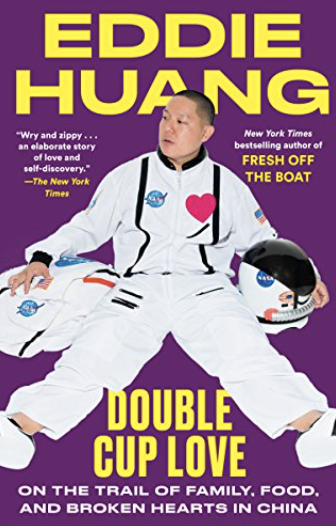
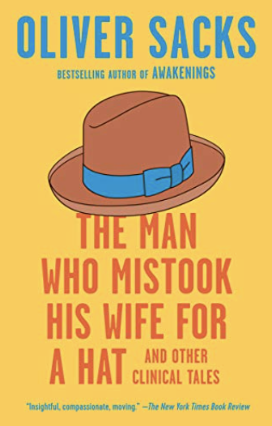
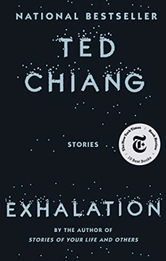
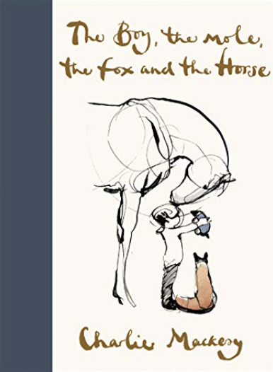
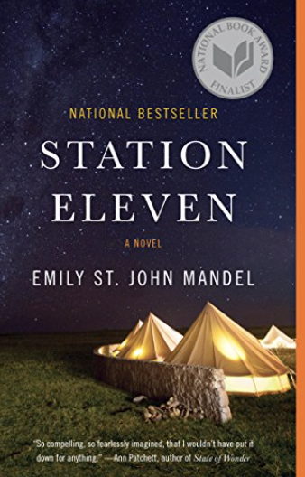
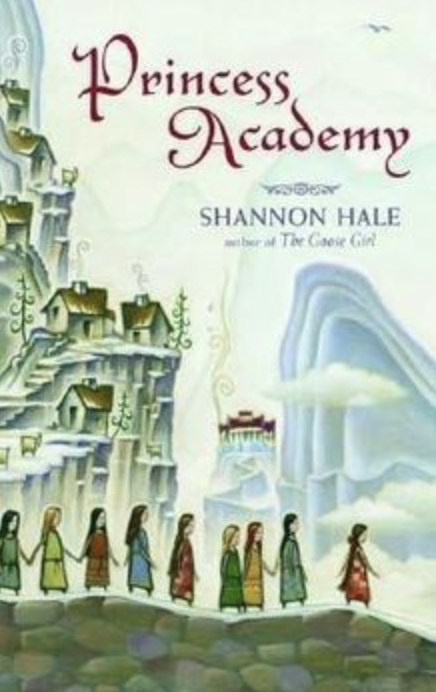
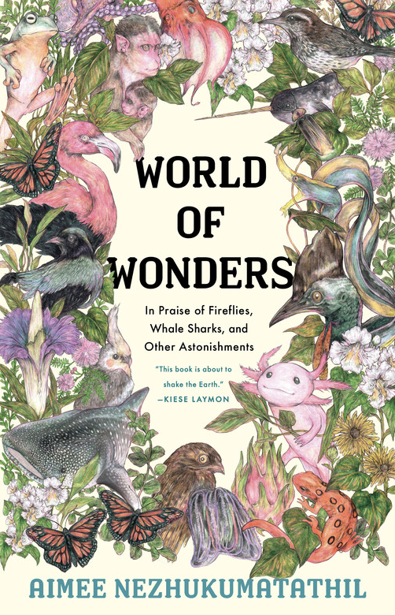

This book was recommended to me and I've read it a few times since last spring. It's nonfiction, and it's funny and there's some really good stuff about the AAPI experience.
Double Cup Love by Eddie Huang

The Man Who Mistook His Wife for a Hat by Oliver Sacks

As you might guess by the title, this is a super interesting book about neurological conditions that manifest in some very strange perceptions and behaviors. As a neuro major, it's super interesting but you definitely don't need to know anything about neuroscience or neurology to read it.
Exhalation by Ted Chiang

This is a collection of short stories. The movie Arrival (starring Amy Adams) was based off a short sotry by this author. Cool stuff.
The Boy, the Mole, the Fox and the Horse by Charlie Mackesy

This is sold out everywhere around Christmas last year. It's technically a picture book but it has a very nice message and the illustration is beautiful. I gifted it to several people last Christmas when everyone needed a pick-me-up.
Station Eleven by Emily St. John Mandel

Fun read and the premise is a pandemic which is ironic.
Princess Academy by Shannon Hale

This was my favorite book growing up and it's not as cheesy as you might think. Or maybe it is.
World of Wonders by Aimee Nezhukumatathil

A collection of anecdotes. Got it as a Christmas gift. I enjoyed it